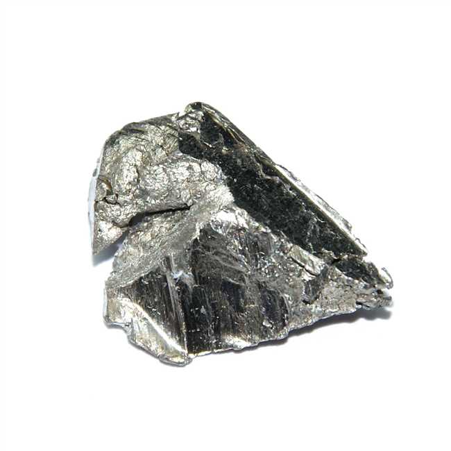

Иттербий

Итте́рбий (химический символ — Yb, от лат. Ytterbium) — химический элемент 3-й группы (по устаревшей классификации — побочной подгруппы третьей группы, IIIB) шестого периода периодической системы химических элементов Д. И. Менделеева, с атомным номером 70.Относится к семейству лантаноидов.Простое вещество иттербий — это глянцевитый редкоземельный металл светло-серого цвета.
Иттербий был открыт Жаном Шарлем Мариньяком в 1878 году в окиси эрбия.Наряду ещё с тремя химическими элементами (тербий, эрбий, иттрий), иттербий получил название в честь села Иттербю, находящегося на острове Ресарё, входящем в Стокгольмский архипелаг.
Иттербий получают металлотермическим восстановлением оксида Yb2O3, электролизом расплава хлорида YbCl3. Иттербий в смеси с другими РЗЭ используется как раскислитель и модификатор сталей; искусственно полученный 175Yb применяется в качестве источника излучения в портативных рентгеновских установках.